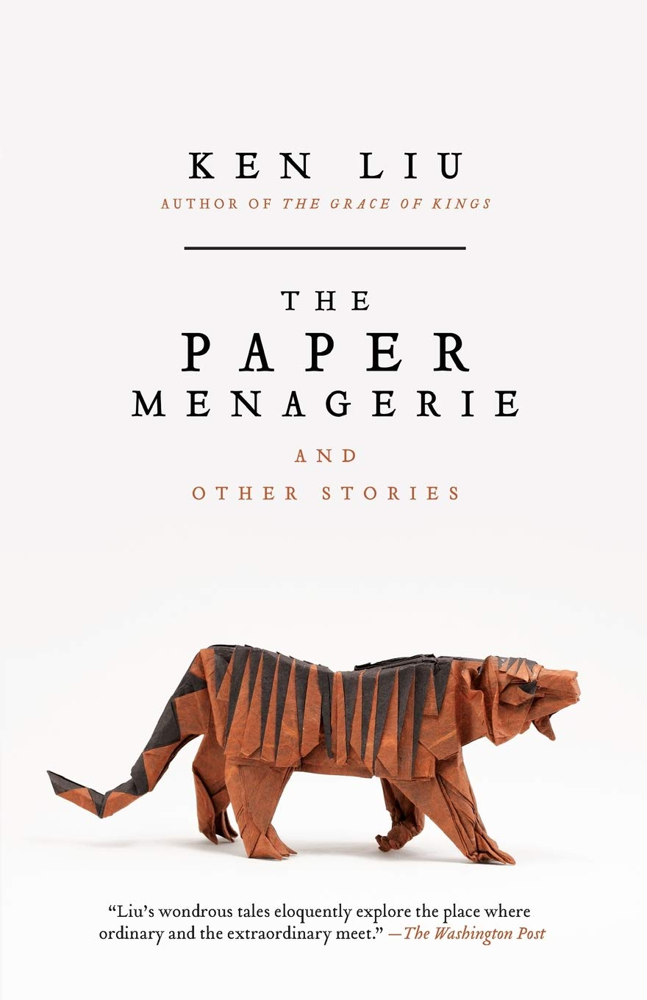

*Still in construction*
Currently reading: Foundation by Isaac Asimov
2023
-
Tools Of Titans: The Tactics, Routines, and Habits of Billionaires, Icons, and World-Class Performer by Timothy Ferriss
5stars 736 pages 📅: 2023-02-12
-
God Emperor of Dune by Frank Herbert
3stars 587 pages 📅: 2023-02-04
-
Project Hail Mary by Andy Weir
5stars 476 pages 📅: 2023-01-21
-
Sacred Economics: Money, Gift, and Society in the Age of Transition by Charles Eisenstein
3.5stars 496 pages 📅: 2023-01-12
2022
-
The Runaway Species: How Human Creativity Remakes the World by David Eagleman, Anthony Brandt
3.5stars 296 pages Date read: 2022-12-17
-
Start with Why: How Great Leaders Inspire Everyone to Take Action by Simon Sinek
3stars pages Date read: 2022-11-07
-
Rest: Why You Get More Done When You Work Less by Alex Pang
4stars pages Date read: 2022-09-20
-
Range: Why Generalists Triumph in a Specialized World by David Epstein
4.5stars pages Date read: 2022-09-12
-
How to Change: The Science of Getting from Where You Are to Where You Want to Be by Katy Milkman
4.5stars pages Date read: 2022-09-12
-
Making Things Happen: Mastering Project Management by Scott Berkun
4.5stars pages Date read: 2022-08-16
-
The Serendipity Mindset: The Art and Science of Creating Good Luck by Christian Busch
3.5stars pages Date read: 2022-08-16
-
Exponential: How Accelerating Technology Is Leaving Us Behind and What to Do About It by Azeem Azhar
4stars pages Date read: 2022-06-12
-
Children of Dune by Frank Herbert
4.5stars pages Date read: 2022-?-?
-
Dune Messiah by Frank Herbert
5stars pages Date read: 2022-01-23
-
 The Paper Menagerie and Other Stories by Ken Liu5stars pages Date read: 2022-01-08
-
 Dune by Frank Herbert
Dune by Frank Herbert5stars pages Date read: 2022-01-04
2021
-
Ego Is the Enemy by Ryan Holiday
3stars 256 pages Date read: 2021-01-06
2020
-
On Confidence by The School of Life
3stars pages Date read: 2020-12-04
-
Personality Isn't Permanent: Break Free from Self-Limiting Beliefs and Rewrite Your Story by Benjamin P. Hardy
3stars pages Date read: 2020-12-02
-
The School of Life by Allain de Botton
4stars pages Date read: 2020-11-15
-
The Machine Stops by E.M. Forster
stars pages Date read: 2020-09-21
-
Mimsy Were The Borogoves by Lewis Padgett
4stars pages Date read: 2020-09-13
-
A Logic Named Joe by Murray Leinster
5stars 528 pages Date read: 2020-09-10
-
A Dream of Armageddon by H.G. Wells
3stars 128 pages Date read: 2020-08-07
-
Humankind: A Hopeful History by Rutger Bregman
4stars pages Date read: 2020-06-30
-
How to Change Your Mind: What the New Science of Psychedelics Teaches Us About Consciousness, Dying, Addiction, Depression, and Transcendence by Michael Pollan
5stars pages Date read: 2020-06-30
-
The Restaurant at the End of the Universe by Douglas Adams
4stars pages Date read: 2020-04-15
-
The Hitchhiker's Guide to the Galaxy by Douglas Adams
5stars pages Date read: 2020-03-25
-
12 Rules for Life: An Antidote to Chaos by Jordan B. Peterson
3stars pages Date read: 2020-03-21
-
24/6 The Power of Unplugging One Day a Week by Tiffany Shlain
4stars pages Date read: 2020-03-12
-
Do Androids Dream of Electric Sheep? by Philip K. Dick
4stars pages Date read: 2020-03-03
-
Emotional Intelligence: Why It Can Matter More Than IQ by Daniel Goleman
3stars pages Date read: 2020-02-10
-
Man's Search for Meaning by Viktor E. Frankl
3stars pages Date read: 2020-01-20
-
The Library of Babel by Jorge Luis Borges
3stars 39 pages Date read: 2020-01-18
-
Microcosmic God by Theodore Sturgeon
5stars pages Date read: 2020-01-?
-
The Lottery by Shirley Jackson
4stars pages Date read: 2020-01-?
-
Arena by Fredric Brown
5stars pages Date read: 2020-01-?